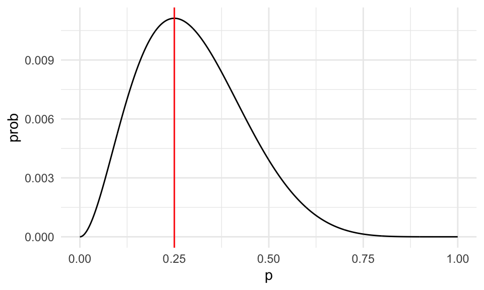
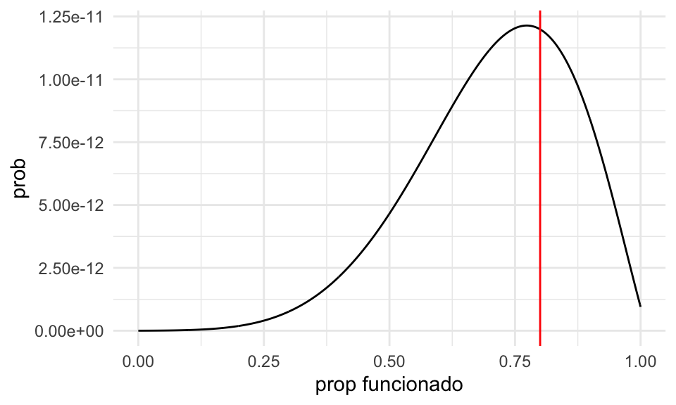
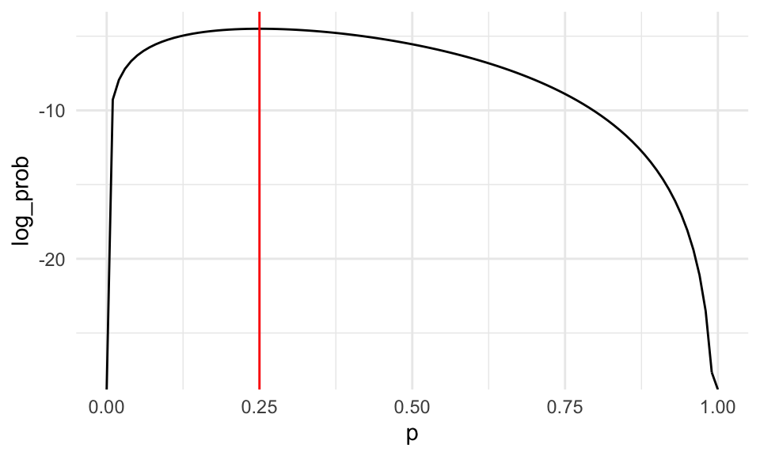
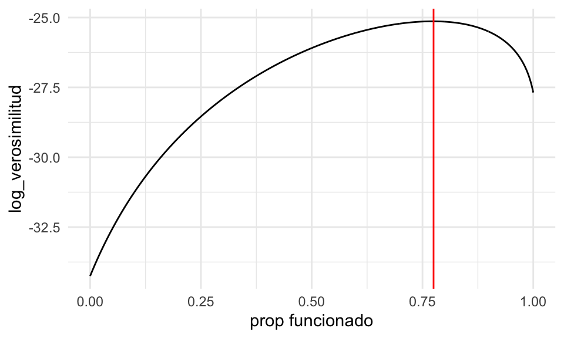
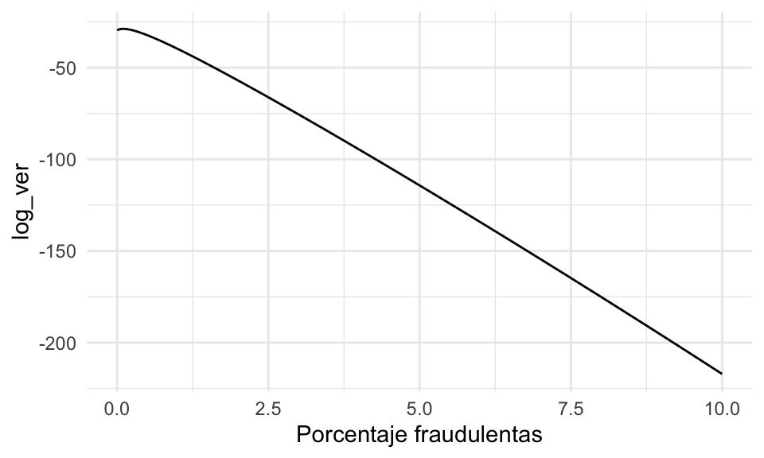
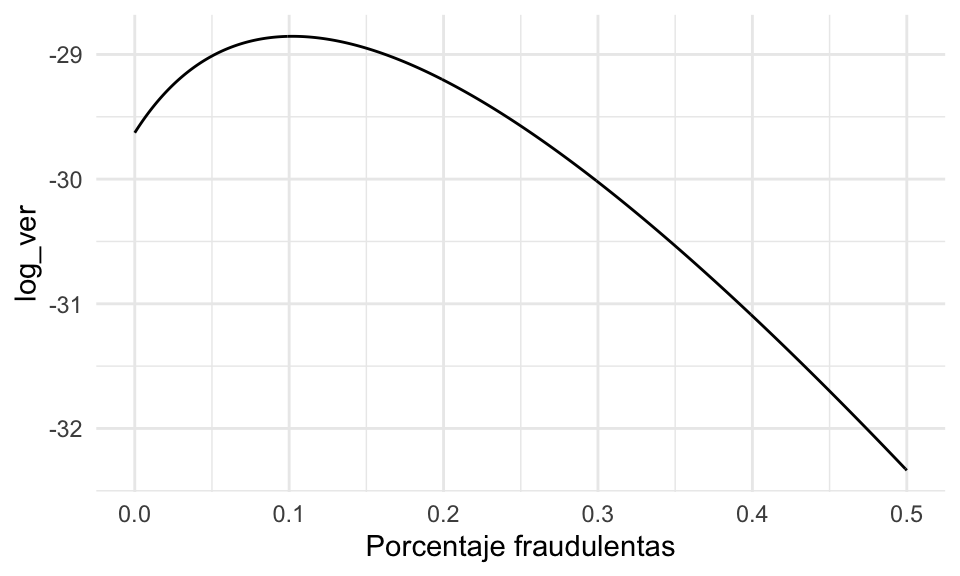
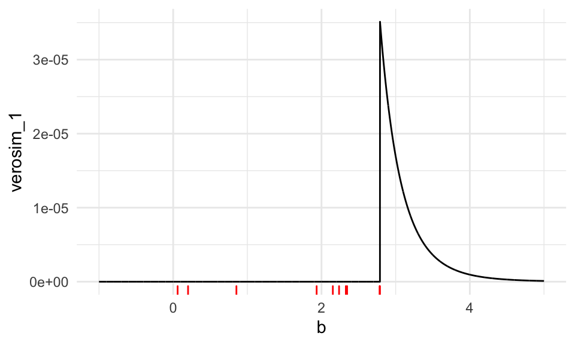
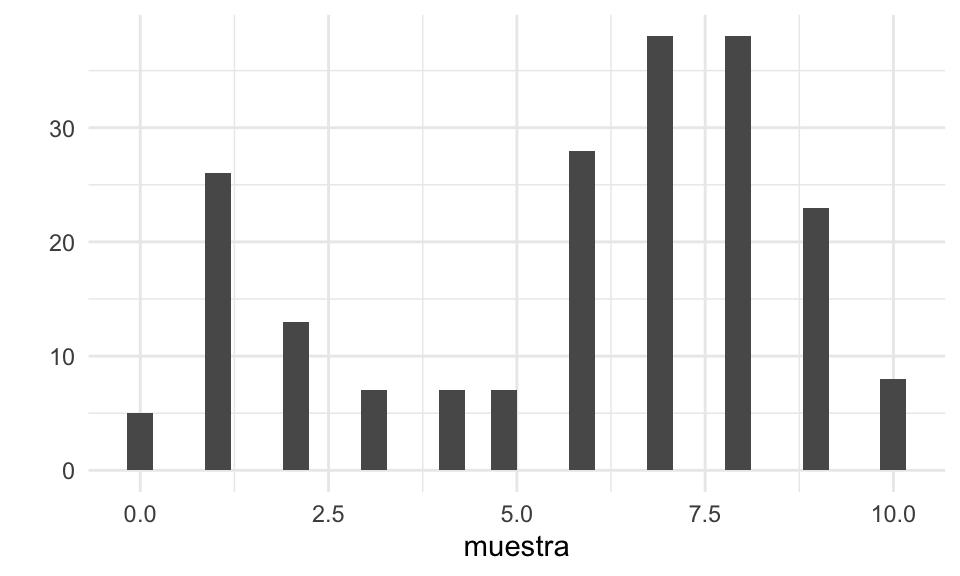
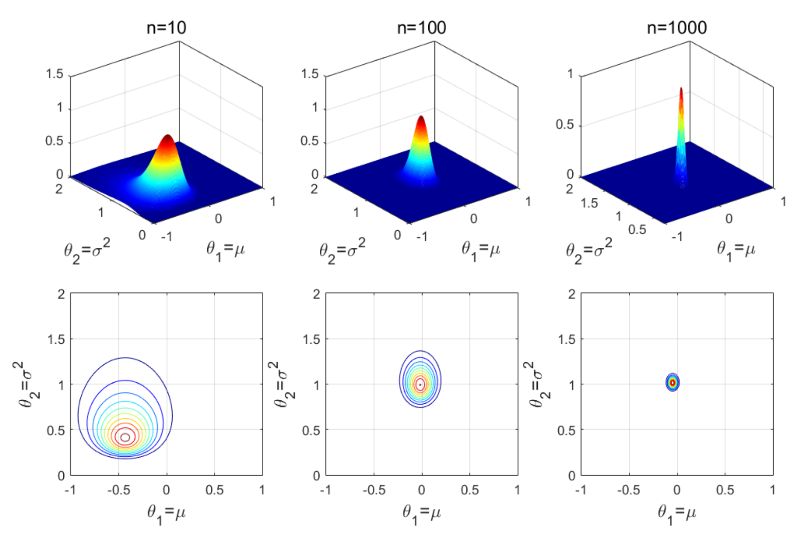

Sección 7 Estimación por máxima verosimilitud
Los ejemplos que hemos visto han sido todos de estimadores plug-in (o por sustitución): si queremos saber una cantidad poblacional, y tenemos una muestra dada, entonces calculamos la estadística de interés como si la muestra fuera la población. Por ejemplo, para estimar la mediana poblacional usamos la mediana muestral, si queremos estimar la media poblacional usamos la media muestral, y así sucesivamente. Estos estimadores usualmente dan resultados razonables (pero hay que checar usando muestra bootstraps, por ejemplo, y pensar lo que estamos haciendo).
Cuando sabemos más acerca de la población y usamos un modelo teórico es posible hacer más: dependiendo de qué cantidades se quieren estimar, podemos construir estimadores que sean óptimos en algún sentido siempre y cuando se cumplan los supuestos teóricos, como veremos ahora.
Por ejemplo: ¿deberíamos estimar el centro de una distribución simétrica con la media o con la mediana, o quizá con una media recortada?
En esta parte construiremos la teoría básica de estimación cuando trabajamos con modelos teóricos conocidos. El objetivo es entender las ideas básicas de estos procedimientos, y cómo evaluar sus resultados.
Recordatorio: las ventajas de usar modelos teóricos para describir distribuciones de datos está en que es posible comprimir más eficientemente la información, es posible construir modelos más complejos juntando varios de estos modelos y de sus dependencias, y de que es posible hacer más teoría útil que nos guíe. La desventaja es que es necesario que esos supuestos teóricos sean razonables.
Introducción a estimación por máxima verosimilitud
Uno de los procedimientos más estándar en esta situación es el método de máxima verosimilitud. Los estimadores de máxima verosimilitud tienen propiedades convenientes, y dan en general resultados razonables siempre y cuando los supuestos sean razonables.
Máxima verosimilitud es un proceso intuitivo, y consiste en aprender o estimar valores de parámetros desconocidos suponiendo para los datos su explicación más probable. Para esto, usando supuestos y modelos requeriremos calcular la probabilidad de un conjunto de observaciones.
Ejemplo. Adaptado de (Chihara and Hesterberg 2018). Supongamos que una máquina produce dos tipos de bolsas de 25 galletas: la mitad de las veces produce una bolsa con 5 galletas de avena y 20 de chispas de chocolate, y la otra mitad produce galletas con 23 galletas de avena y 2 de chispas de chocolate.
Tomamos una bolsa, y no sabemos qué tipo de bolsa es (parámetro desconocido). Extraemos al azar una de las galletas, y es de chispas de chocolate (observación).
Por máxima verosimilitud, inferimos que la bolsa que estamos considerando tiene 5 galletas de avena. Esto es porque es más probable observar una galleta de chispas en las bolsas que contienen 5 galletas de avena que en las bolsas que contienen 23 galletas de avena. Podemos cuantificar la probabilidad que “acertemos” en nuestra inferencia.
Cómo se aprecia en el ejemplo anterior, el esquema general es:
- Existe un proceso del que podemos obtener observaciones de algún sistema o población real.
- Tenemos un modelo probabilístico que dice cómo se producen esas observaciones a partir del sistema o población real.
- Usualmente este modelo tiene algunas cantidades que no conocemos, que rigen el proceso y cómo se relaciona el proceso con las observaciones.
Nuestro propósito es:
- Extraemos observaciones del proceso
\[x_1, x_2, \ldots, x_n.\] - Queremos aprender de los parámetros desconocidos del proceso para calcular cantidades de interés acerca del sistema o población real
En principio, los modelos que consideramos pueden ser complicados y tener varias partes o parámetros. Veamos primero un ejemplo clásico con un solo parámetro, y cómo lo resolveríamos usando máxima verosimilitud.
Nota: Cuando decimos muestra en general nos referimos a observaciones independientes obtenidas del mismo proceso (ver la sección 5 para ver qué significa que sea independientes). Este esquema es un supuesto que simplifica mucho los cálculos, como discutimos antes. Muchas veces este supuesto sale del diseño de la muestra o del estudio, pero en todo caso es importante considerar si es razonable o no para nuestro problema particular.
Denotemos por \(f(x; \theta)\) la función de densidad para una variable aleatoria continua con párametro asociado \(\theta.\) Denotamos por \(X_1, \ldots, X_n,\) una muestra aleatoria de \(n\) observaciones de esta distribución y por \(x_1, \ldots, x_n\) los valores observados de esta muestra aleatoria.
Ejemplo. Supongamos que queremos saber qué proporción de registros de una base de datos tiene algún error menor de captura. No podemos revisar todos los registros, así que tomamos una muestra de 8 registros, escogiendo uno por uno al azar de manera independiente. Revisamos los 8 registros, y obtenemos los siguientes datos:
\[x_1 = 0, x_2 = 1, x_3 = 0, x_4 = 0, x_5 =1, x_6 =0, x_7 =0, x_8 =0\]
donde 1 indica un error menor. Encontramos dos errores menores. ¿Cómo estimamos el número de registros con errores leves en la base de datos?
Ya sabemos una respuesta razonable para nuestro estimador puntual, que sería \(\hat{p}=2/8=0.25\). Veamos cómo se obtendría por máxima verosimilitud.
Según el proceso con el que se construyó la muestra, debemos dar una probabilidad de observar los 2 errores en 8 registros. Supongamos que en realidad existe una proporción \(p\) de que un registro tenga un error. Entonces calculamos
Probabilidad de observar la muestra:
\[P(X_1 = 0, X_2 = 1, X_3 = 0, X_4 = 0, X_5 =1, X_6 =0, X_7 =0, X_8 =0)\]
es igual a
\[P(X_1 = 0)P(X_2 = 1)P(X_3 = 0)P( X_4 = 0)P(X_5 =1)P(X_6 =0)P(X_7 =0)P(X_8 =0)\] pues la probabilidad de que cada observación sea 0 o 1 no depende de las observaciones restantes (la muestra se extrajo de manera independiente).
Esta última cantidad tiene un parámetro que no conocemos: la proporcion \(p\) de registros con errores. Así que lo denotamos como una cantidad desconocida \(p\). Nótese entonces que \(P(X_2=1) = p\), \(P(X_3=0) = 1-p\) y así sucesivamente, así que la cantidad de arriba es igual a
\[(1-p)p(1-p)(1-p)p(1-p)(1-p)(1-p) \]
que se simplifica a
\[ \mathcal{L}(p) = p^2(1-p)^6\]
Ahora la idea es encontrar la p que maximiza la probabilidad de lo que observamos. En este caso se puede hacer con cálculo, pero vamos a ver una gráfica de esta función y cómo resolverla de manera numérica.
verosimilitud <- function(p){
p^2 * (1-p)^6
}
dat_verosim <- tibble(x = seq(0,1, 0.001)) %>% mutate(prob = map_dbl(x, verosimilitud))
ggplot(dat_verosim, aes(x = x, y = prob)) + geom_line() +
geom_vline(xintercept = 0.25, color = "red") +
xlab("p")
Nótese que esta gráfica:
- Depende de los datos, que pensamos fijos.
- Cuando cambiamos la \(p\), la probabilidad de observar la muestra cambia. Nos interesa ver las regiones donde la probabilidad es relativamente alta.
- El máximo está en 0.25.
- Así que el estimador de máxima verosimilitud es \(\hat{p} = 0.25\), que es también el estimador usual de plugin en este caso.
Para uniformizar la notación con el caso continuo que veremos más adelante, usaremos la notación
\[P(X=x) = f(x)\] donde \(f\) es la función de densidad (en este caso, función de masa de probabilidad) de \(X\). Si esta función depende de un parámetro, escribimos \[f(x ;\theta)\]
Definición. Sean \(X_1, \ldots, X_n\) una muestra de una densidad \(f(x; \theta)\) y sean \(x_1,x_2,\ldots, x_n\) los valores observados.
La función de verosimilitud del párametro de interés \(\theta\) está definida por \[\begin{align} \mathcal{L}(\theta; x_1, \ldots, x_n) = \prod_{i = 1}^n f(x_i; \theta). \end{align}\]
Esta función nos dice qué tan creible es el valor del parámetro \(\theta\) dada la muestra observada. A veces también la denotamos por \(\mathcal{L}_n(\theta)\).
Ahora definimos qué es un estimador de máxima verosimilitud.
Definición. Un estimador de máxima verosimilitud lo denotamos por \(\hat \theta_{\textsf{MLE}}\) y es un valor que satisface \[\begin{align} \hat \theta_{\textsf{MLE}} = \underset{\theta \, \in \, \Theta}{\arg\max}\, \mathcal{L}(\theta; x_1, \ldots, x_n), \end{align}\] donde \(\theta\) denota el espacio parametral. Es decir, el espacio válido de búsqueda congruente con la definición del modelo.
- Considera el caso de una normal con media y varianza desconocidas. ¿Cuáles son los espacios parametrales para efectuar \(\mathsf{MLE}\)?
- Considera el caso de una Binomial con parámetros \(N\) y \(p\) desconocidos. ¿Cuáles son los espacios parametrales para la búsqueda del \(\mathsf{MLE}\)?
Obsérvese que para construir la verosimilitud y en consecuencia buscar por estimadores de máxima verosimlitud necesitamos:
- Un modelo teórico de cómo es la población con parámetros e
- Información de cómo se extrajo la muestra,
y entonces podemos resolver nuestro problema de estimación convirtiéndolo en uno de optimización.
Probamos esta idea con un proceso más complejo.
Ejemplo. Supongamos que una máquina puede estar funcionando correctamente o no en cada corrida. Cada corrida se producen 500 productos, y se muestrean 10 para detectar defectos. Cuando la máquina funciona correctamente, la tasa de defectos es de 3%. Cuando la máquina no está funcionando correctamente la tasa de defectos es de 20%
Supongamos que escogemos al azar 11 corridas, y obervamos los siguientes número de defectuosos:
\[1, 0, 0, 3 ,0, 0, 0, 2, 1, 0, 0\]
La pregunta es: ¿qué porcentaje del tiempo la máquina está funcionando correctamente?
Primero pensemos en una corrida. La probabilidad de observar una sucesión particular de \(r\) defectos es
\[0.03^r(0.97)^{(10-r)}\] cuando la máquina está funcionando correctamente.
Si la máquina está fallando, la misma probabilidad es
\[0.2^r(0.8)^{(10-r)}.\]
Ahora supongamos que la máquina trabaja correctamente en una proporción \(p\) de las corridas. Entonces la probabilidad de observar \(r\) fallas se calcula promediando (probabilidad total) sobre las probabilidades de que la máquina esté funcionando bien o no:
\[0.03^r(0.97)^{(10-r)}p + 0.2^r(0.8)^{(10-r)}(1-p)\] Y esta es nuestra función de verosimilitud para una observación.
Suponemos que las \(r_1,r_2, \ldots, r_{11}\) observaciones son independientes (por ejemplo, después de cada corrida la máquina se prepara de una manera estándar, y es como si el proceso comenzara otra vez). Entonces tenemos que multiplicar estas probabilidades para cada observación \(r_1\):
calc_verosim <- function(r){
q_func <- 0.03^r*(0.97)^(10-r)
q_falla <- 0.2^r*(0.8)^(10-r)
function(p){
#nota: esta no es la mejor manera de calcularlo, hay
# que usar logaritmos.
prod(p*q_func + (1-p)*q_falla)
}
}
verosim <- calc_verosim(c(1, 0, 0, 3, 0, 0, 0, 2, 1, 0, 0))
verosim(0.1)## [1] 2.692087e-14dat_verosim <- tibble(x = seq(0,1, 0.001)) %>% mutate(prob = map_dbl(x, verosim))
ggplot(dat_verosim, aes(x = x, y = prob)) + geom_line() +
geom_vline(xintercept = 0.8, color = "red") +
xlab("prop funcionado")
Y nuestra estimación puntual sería de alrededor de 80%.
Máxima verosimilitud para observaciones continuas
Cuando las observaciones \(x_1,\ldots, x_n\) provienen de una distribución continua, no tiene sentido considerar \(P(X = x_i)\), pues siempre es igual a cero.
Sin embargo, podemos escribir para pequeños valores \(\epsilon \ll 1\) \[\begin{align} P(x - \epsilon < X < x + \epsilon | \theta) = \int_{x - \epsilon}^{x + \epsilon} f(t; \theta) \, \text{d} t \approx 2 \epsilon f(x; \theta), \end{align}\] donde \(f(x; \theta)\) es la función de densidad de \(X.\) Por lo tanto, \[\begin{align} \begin{split} P&(x_1 - \epsilon < X_1 < x_1 + \epsilon, \ldots, x_n - \epsilon < X_n < x_n + \epsilon | \theta) \\ &= \prod_{i = 1}^n P(x_i - \epsilon < X_i < x_i + \epsilon | \theta) \\ &= \prod_{i = 1}^n 2 \epsilon f(x_i; \theta) = (2\epsilon)^n \prod_{i = 1}^n f(x_i; \theta). \end{split} \end{align}\]
Notemos que si \(\epsilon \rightarrow 0\) la ecuación rápidamente converge a cero. Pero para pequeños valores de \(\epsilon\) la ecuación que nos interesa es proporcional a \(\prod_{i = 1}^n f(x_i; \theta).\)
De esta forma, nuestra definición de máxima verosimilitud y estimadores de máxima verosimilitud es la misma para el caso continuo (verifica las definiciones de la sección anterior).
Ejemplo. Supongamos que tenemos una muestra \(x_1\ldots, x_n\) extraidas de una distribución exponencial con tasa \(\lambda>0\) donde no conocemos \(\lambda\). ¿Cuál es el estimador de máxima verosimilitud de \(\lambda\)?
Para \(\lambda>0\), tenemos que
\[{\mathcal L}(\lambda) = \prod_{i=1}^n \lambda e^{-\lambda x_i}\] de modo que
\[{\mathcal L}(\lambda) = \lambda^n e^{-\lambda \sum_{i=1}^nx_i} = \lambda^n e^{-n\lambda\bar{x}} = e^{n(\log\lambda - \lambda\bar{x})}\] Que podemos maximizar usando cálculo para obtener \(\hat{\lambda}_{\mathsf{ML}} = \frac{1}{\bar{x}}\) (demuéstralo). Discute por qué esto es intuitivamente razonable: ¿cuál es el valor esperado de una exponencial con parámetro \(\lambda\)?
Aspectos numéricos
Encontrar el estimador de máxima verosimilitud (\(\textsf{MLE}\)) es automático en la mayoría de los casos. En teoría, podemos reutilizar la misma rutina numérica para encontrar el estimador sin ninguna ayuda de la analista. Esto contrasta con otras técnicas de estimación en donde se requieren cálculos y manipulación de ecuaciones.
Sin embargo, hay situaciones que se pueden evitar de manera general. Por ejemplo, cuando calculamos la verosimilitud arriba, nótese que estamos multiplicando números que pueden ser muy chicos (por ejemplo \(p^6\), etc). Esto puede producir desbordes numéricos fácilmente. Por ejemplo para un tamaño de muestra de 1000, podríamos tener que calcular
## [1] 0En estos casos, es mejor hacer los cálculos en escala logarítmica. El logaritmo convierte productos en sumas, y baja exponentes multiplicando. Si calculamos en escala logaritmica la cantidad de arriba, no tenemos problema:
## [1] -1863.14Ahora notemos que
- Maximizar la verosimilitud es lo mismo que maximizar la log-verosimilitud, pues el logaritmo es una función creciente. Si \(x_{\max}\) es el máximo de \(f\), tenemos que \(f(x_{\max})>f(x)\) para cualquier \(x\), entonces tomando logaritmo, \[\log(f(x_{max}))>\log(f(x)),\] para cualquier \(x.\) Pues el logaritmo respeta la desigualdad por ser creciente.
- Usualmente usamos la log-verosimilitud para encontrar el estimador de máxima verosimilitud.
- Hay razónes teóricas y de interpretación por las que también es conveniente hacer esto.
Definición. La log-verosimilitud la denotamos usualmente por \[\ell_n(\theta) = \log \left(\mathcal{L}_n(\theta)\right),\] donde hemos suprimido la dependencia en la muestra por conveniencia.
Considera una muestra de variables aleatorias Gaussianas con media \(\mu\) y varianza \(\sigma^2.\) Escribe la verosimilitud para una muestra de tamaño \(n,\) y después escribe la función de log-verosimilitud.
Ejemplo. En nuestro primer ejemplo,
log_verosimilitud <- function(p){
2*log(p) + 6*log(1-p)
}
dat_verosim <- tibble(x = seq(0,1, 0.01)) %>% mutate(log_prob = map_dbl(x, log_verosimilitud))
ggplot(dat_verosim, aes(x = x, y = log_prob)) + geom_line() +
geom_vline(xintercept = 0.25, color = "red") +
xlab("p")
Obtenemos el mismo máximo. Podemos incluso resolver numéricamente:
## [1] 0.25Y en nuestro segundo ejemplo:
calc_log_verosim <- function(r){
q_func <- 0.03^r*(0.97)^(10-r)
q_falla <- 0.2^r*(0.8)^(10-r)
function(p){
#nota: esta no es la mejor manera de calcularlo, hay
# que usar logaritmos.
sum(log(p*q_func + (1-p)*q_falla))
}
}
log_verosim <- calc_log_verosim(c(1, 0, 0, 3, 0, 0, 0, 2, 1, 0, 0))
log_verosim(0.1)## [1] -31.24587dat_verosim <- tibble(x = seq(0,1, 0.001)) %>% mutate(log_verosimilitud = map_dbl(x, log_verosim))
ggplot(dat_verosim, aes(x = x, y = log_verosimilitud)) + geom_line() +
geom_vline(xintercept = 0.775, color = "red") +
xlab("prop funcionado")
En la función de verosimilitud los datos están fijos y optimizamos con respecto a las variables que no conocemos. ¿Cómo construimos esta función en general, para cualquier tamaño de muestra y cualquier número de registros detectados como erróneos?
Nótese que la verosimilitud la consideramos función de los parámetros, donde los datos están fijos.
Podemos construir una función que genera la función de verosimilitud dependiendo de los datos. En nuestro primer ejemplo de muestras de registros erróneos, podríamos construir una función que genera la log verosimilitud dependiendo del tamaño de muestra y del número de errores encontrado:
construir_log_verosim <- function(n, n_err){
# n es tamaño de muestra
# n_err el número de errores detectados (datos)
n_corr <- n - n_err
log_verosim <- function(p){
n_err * log(p) + n_corr * log(1-p)
}
}Cuando fijamos \(n\) y \(n_{\textsf{err}}\), esta función genera otra función, la log verosimilitud, que es la que queremos optimizar.
Supongamos entonces que sacamos 20 registros al azar y observamos 10 incorrectos. La función de verosimilitud es
tibble(x = seq(0,1,0.001)) %>%
mutate(log_ver = log_vero(x)) %>%
ggplot(aes(x = x, y = log_ver)) +
geom_line() +
geom_vline(xintercept = 0.5, color = 'red')
Ejemplo. Supongamos que en una población de transacciones hay un porcentaje \(p\) (desconocido) que son fraudulentas. Tenemos un sistema de clasificación humana que que marca transacciones como sospechosas. Con este sistema hemos medido que la proporción de transacciones normales que son marcadas como sospechosas es de 0.1%, y que la proporción de transacciones fraudulentas que son marcadas como sospechosas es de 98%. Supongamos que extraemos una muestra de 2000 transacciones, de manera que todas ellas tiene la misma probabilidad de ser fraudulentas. El sistema de clasificación marca 4 transacciones como fraudulentas. ¿Cómo estimamos la proporción de transacciones fraudulentas en la población?
Solución: sea \(p\) la proporción de transacciones fraudulentas. Entonces la probabilidad de que una transacción sea marcada como sospechosa es (proba total):
\[0.98p + 0.001(1-p)\]
Pues tenemos que contar 98% de la proporción \(p\) de fraudulentas (correctamente detectadas) más 0.1% de la proporción \((1-p)\) de fraudulentas. Escribimos entonces nuestra función de verosimilitud
crear_log_verosim <- function(n, n_sosp){
# devolver la función log verosimilitud
log_verosimilitud_pct <- function(pct){
# sup que pct es la proporcentaje de fraudes,
# que es el parámetro que queremos estimar
prob_sosp <- 0.98 * pct / 100 + 0.001 * (1 - pct / 100)
log_prob <- n_sosp * log(prob_sosp) + (n - n_sosp) * log(1- prob_sosp)
log_prob
}
log_verosimilitud_pct
}La verosimilitud es una función de \(p\).
A continuación la mostramos de manera gráfica.

No se ve muy claro dónde ocurre el máximo, pero podemos ampliar cerca de cero la misma gráfica:

- Vemos que alrededor de 0.1% maximiza la probabilidad de haber observado 4 transacciones sospechosas.
- Notamos sin embargo que varios valores alrededor de este valor tienen probabilidad similar, así que también son consistentes con los datos (por ejemplo, valores como 0.05 o 0.15 tienen probabilidad similar). Tendremos que considerar esto para evaluar la incertidumbre en nuestra estimación.
- Obsérvese adicionalmente que si no tomáramos en cuenta las probabilidades de falsos negativos y falsos positivos la estimación simple daría \(4/2000 = 0.002\) (0.2%), que es dos veces más grande que nuestra estimación puntual por máxima verosimilitud.
Ejemplo. Este es un ejemplo donde mostramos que cuando el soporte de las densidades teóricas es acotado hay que tener cuidado en la definición de la verosimilitud. En particular, el soporte de la variable aleatoria es el párametro de interés. Supongamos que nuestros datos son generados por medio de una distribución uniforme en el intervalo \([0,b].\) Contamos con una muestra de \(n\) observaciones generadas de manera independiente \(X_i \sim U[0,b]\) para \(i= 1, \ldots, n.\) Sin embargo, no conocemos el valor de \(b\).
¿Cómo es la función de log verosimilitud \({\mathcal L}_n(b)\) para este caso? Nótese que cuando el parámetro \(b\) es menor que alguna \(x_i\), tenemos que \({\mathcal L}_n(b) = 0\): la verosimilitud es cero si tomamos una \(b\) más chica que algún dato, pues este valor es incosistente del todo con los datos observados. En otro caso,
\[{\mathcal L}_n(b) = \frac{1}{b^n},\] pues la función de densidad de una uniforme en \([0,b]\) es igual a \(1/b\) en el intervalo \([0,b]\), y 0 en otro caso. Podemos escribir entonces:
crear_verosim <- function(x){
n <- length(x)
verosim <- function(b){
indicadora <- ifelse(all(x <= b), 1, 0)
indicadora / b^n
}
}Ahora podemos hacer máxima verosimilitud para un ejemplo:
set.seed(234)
x <- runif(10, 0, 3)
verosim <- crear_verosim(x)
res_opt <- optimize(verosim, c(-1000, 1000), maximum = TRUE)
res_opt$maximum## [1] 2.788167Y nótese que, como esperaríamos, este valor es el máximo de la muestra:
## [1] 2.788158La gráfica de la función de verosimilitud es:
tibble(b = seq(-1, 5, 0.001)) %>%
mutate(verosim_1 = map_dbl(b, ~ verosim(.x))) %>%
ggplot() +
geom_line(aes(x = b, y = verosim_1)) +
geom_rug(data = tibble(x = x), aes(x = x), colour = "red")
Podemos escribir en una fórmula como:
\[\begin{align} \mathcal{L}(b; x_1, \ldots, x_n) = \prod_{i = 1}^n 1_{[0,b]}(x_i) \frac1b. \end{align}\]
Y podríamos resolver analíticamente como sigue:
Si consideramos \[ \hat b_{\textsf{MLE}} = x_{\max} = \max\{x_i\},\] notemos que cualquier valor observado necesariamente satisface \[x_i \leq \hat b_{\textsf{MLE}},\] y por lo tanto todas las funciones indicadoras están encendidas. El valor de la verosimilitud es igual a \[\mathcal{L}(\hat b_{\textsf{MLE}}; x_1, \ldots, x_n) = \left(\frac{1}{x_{\max}}\right)^n \geq \left (\frac1b\right )^n\] para cualquier \(b\geq x_{\max}\). Como la verosimilitud para \(b<x_{\max}\) es igual a cero, esto demuestra que el máximo de la muestra es el estimador de máxima verosimilitud de \(b\).
Observación. Este ejemplo también tiene dificultades numéricas, pues la verosimilitud presenta discontinuidades y regiones con derivada igual a cero, y la mayoria de los algoritmos numéricos no tienen garantías buenas de covergencia al máximo en estos casos. Si aplicamos sin cuidado descenso en gradiente, por ejemplo, podríamos comenzar incorrectamente en un valor \(b_0 < x_{\max}\) y el algoritmo no avanzaría al máximo.
El método de momentos
Un método alternativo para estimación de parámetros es el método de momentos (\(\textsf{MOM}\)). Para esto creamos un sistema de ecuaciones de cardinalidad igual al número de parámetros a estimar. Es decir, consideramos \(\theta \in \mathbb{R}^p;\) los momentos teoricos \[\begin{align} m_k(\theta) = \mathbb{E}_f[X^k] = \int_{\mathcal{X}} x^k \, f(x; \theta) \, \text{d} x; \end{align}\] los momentos empíricos \[\begin{align} \hat m_k(\theta) = \frac1n \sum_{i = 1}^n X_i^k; \end{align}\] y creamos el siguiente sistema de ecuaciones: \[\begin{align} m_k(\theta) = \hat m_k(\theta), \qquad k = 1, \ldots, p. \end{align}\] Este sistema explota la aproximación \(m_k(\theta) \approx \hat m_k(\theta),\) cuya justificación está determinada por la Ley de los grandes números.
Ejemplo. (continuación). Para el caso de \(n\) observaciones \(X_i \sim U[0,b],\) el método de momentos arroja un estimador de la forma \[\hat b_{\textsf{MOM}} = 2 \bar X_n.\]Considera el caso de una muestra de tamaño \(n = 3,\) con observaciones \(X_1 = X_2 = 1\) y \(X_3= 7\). ¿Cuál es el estimador \(\textsf{MOM}\)? ¿Qué implicaciones tiene sobre la observación \(X_3\)?
Máxima verosimilitud para más de un parámetro
Si nuestro modelo contiene más de un parámetro desconocido podemos también usar máxima verosimilitud. En este caso, optimizamos sobre todos los parámetros usando cálculo o alguna rutina numérica
Ejemplo. Supongamos que en una población de estudiantes tenemos dos tipos: unos llenaron un examen de opción múltiple al azar (1 de 5), y otros contestaron las preguntas intentando sacar una buena calificación. Suponemos que una vez que conocemos el tipo de estudiante, todas las preguntas tienen la misma probabilidad de ser contestadas correctamente, de manera independiente. El modelo teórico está representado por la siguiente simulación:
sim_formas <- function(p_azar, p_corr){
tipo <- rbinom(1, 1, 1 - p_azar)
if(tipo==0){
# al azar
x <- rbinom(1, 10, 1/5)
} else {
# no al azar
x <- rbinom(1, 10, p_corr)
}
x
}Y una muestra se ve como sigue:

Supongamos que no conocemos la probabildad de contestar correctamente ni la proporción de estudiantes que contestó al azar. ¿Como estimamos estas dos cantidades?
Escribimos la verosimilitud:
crear_log_p <- function(x){
log_p <- function(pars){
p_azar = pars[1]
p_corr = pars[2]
sum(log(p_azar * dbinom(x, 10, 1/5) + (1 - p_azar) * dbinom(x, 10, p_corr)))
}
log_p
}Creamos la función de verosimilitud con los datos
y optimizamos
## [1] 0.2827061 0.7413276En este caso, obtenemos estimaciones razonables de ambos parámetros. Nota: dependiendo de los datos, este problema puede estar mal condicionado. Por ejemplo, ¿qué pasa si la probabilidad de acertar cuando se contesta bien está cercano al azar?
Ejemplo. (Tomado de (Zuev 2018)). Considera el caso de \(n\) muestras iid de un modelo Gaussiano. Es decir, \(X_1, \ldots, X_n \sim \mathsf{N}(\mu, \sigma^2).\) Consideremos que ambos parámetros son desconocidos y nos gustaria encontrar el \(\textsf{MLE}\). Para este problema denotamos \(\theta \in \mathbb{R}^2\), donde \(\theta_1 = \mu\) y \(\theta_2 = \sigma^2.\)
La función de verosimiltud se puede calcular (ignorando algunas constantes multiplicativas) como \[\begin{align} \mathcal{L}_n(\theta) &= \prod_{i = 1}^n \frac{1}{\sigma} \, \exp\left( - \frac{(x_i - \mu)^2}{2\sigma^2}\right) \\ &= \theta_2^{-\frac{n}{2}}\exp\left( - \frac{1}{2 \theta_2} \sum_{i = 1}^n (x_i - \theta_1)^2 \right). \end{align}\]
A continuación mostramos la representación gráfica de la función de verosimilitud de este ejemplo. Notamos lo mismo que para los ejemplos anteriores. Conforme más datos tenemos, más nos acercamos a los valores reales que no conocemos.

En las siguientes secciones veremos los métodos clásicos para encontrar el \(\textsf{MLE}\). Y mas adelante, estudiaremos los propiedades teóricas que hacen a estos estimadores tan útiles y prácticos en aplicaciones.
Ejemplo. Como ejercicio, podemos encontrar los estimadores de máxima verosimilitud cuando tenemos una muestra \(X_1, \ldots, X_n \sim \mathsf{N}(\mu, \sigma^2).\) (puedes derivar e igualar el cero para encontrar el mínimo). También podemos resolver numéricamente, por ejemplo:
Supongamos que tenemos la siguiente muestra:
La función generadora de la log verosimilitud para una muestra es (ve la expresión del ejercicio anterior y calcula su logaritmo), y generamos la función de verosimilitud para nuestra muestra:
crear_log_p <- function(x){
log_p <- function(pars){
media = pars[1]
desv_est = pars[2]
n <- length(x)
# ve la ecuación del ejercicio anterior
z <- (x - media) / desv_est
log_verosim <- -(log(desv_est) + 0.5 * mean(z^2))
log_verosim
}
log_p
}
log_p <- crear_log_p(muestra)Ahora optimizamos (checa que el método converge):
res <- optim(c(0, 0.5), log_p, control = list(fnscale = -1, maxit = 1000), method = "Nelder-Mead")
res$convergence## [1] 0est_mv <- tibble(parametro = c("media", "sigma"), estimador = res$par) %>%
column_to_rownames(var = "parametro")
est_mv## estimador
## media 1.136001
## sigma 1.838421Verifica que el estimador de la media y de la desviación estándar es el que esperábamos (y que puedes derivar analíticamente):
n <- length(muestra)
sd_n <- function(x) sqrt( mean((x - mean(x))^2))
c(media = mean(muestra), sigma = sd_n(muestra)) %>% round(4)## media sigma
## 1.1364 1.8392La siguiente pregunta qué nos interesa hacer es: ¿cómo estimamos la variabilidad de estos estimadores? Más adelante veremos una respuesta basada en teoría, pero también podemos resolver este problema usando el bootstrap.
Referencias
Chihara, Laura M., and Tim C. Hesterberg. 2018. Mathematical Statistics with Resampling and R. 2nd ed. Hoboken, NJ: John Wiley & Sons. https://sites.google.com/site/chiharahesterberg/home.
Zuev, Konstantin. 2018. “Statistical Inference.” Available at SSRN 3125891.